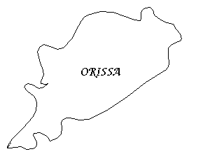

Welcome to Orissa -- A largely undiscovered beauty
Orissa
is a fascinating land on the east coast of
India
surrounded by the states of
West Bengal & Bihar on the north,
Andhra Pradesh on the south, Madhya Pradesh on the west,
and the Bay of Bengal on the east. Here is a map:

Orissa has many ancient and architecturally marvellous
temples,
historical monuments, beautiful beaches, wild life
sanctuaries and enchanting sceneries.
Orissa is an unspoilt, natural heaven still largely undiscovered by tourists.
`Orissa' as a child writes in Oriya language:
Political history of Orissa
Orissa, the land of temples
The most famous among the temples are Lingaraj temple and Rajarani temple in Bhubaneswar , Sun temple in Konark , and Jagannath temple in Puri . Other well-known temples include Samaleswari in Sambalpur and Thakurani in Berhampur. See a dancing, sculpted figurine from the Sun temple of Konark here.
Classical Music and Dance
Orissi is both a form of dance as well as a form of music. Top of this home page features a view of an Orissi dancer. There are several other traditional and tribal dances of great skill and artistic excellence, e.g., "Chhau Nacha".Its beaches
The coast line of Orissa with the bay of Bengal has several outstanding beaches in Puri , Chandipur and Gopalpur . The beaches in Chandaneswar in Balasore and in Konark are also very attractive.
Its Wild life
Orissa is rich in its varied wildlife. Here is a map of Orissa's wildlife parks. The Nandankanan Biological Park and the Chandaka elephant reserve are within 20 km of the state capital Bhubaneswar . Nandankanan is an open air zoo famous for its breeding of white tigers and the largest lion safari of India. The Chandaka elephant reserve is one of its kind in India where visitors can see elephants, sambar, bears, wild dogs, pea fowls and pythons in their natural surrounding. Elephants can also be seen in the Lakhari valley sanctuary in Ganjam .

Bhitarakanika sanctuary (near Chandabali in Balasore district) is the second largest mangrove forest in the country and a boat ride through the several small branches of the Brahmani delta is made exciting by the many crocodiles along the banks. Towards the end of the delta is the island of Dhamara where millions of turtles visit to lay eggs and can be seen in certain days.
Chilika lake (100 kms from Bhubaneswar) is the largest brackish water lake in the country which attracts large number of migratory birds including flamingooes, teals, bar headed geese, brahminy ducks, coots, pigeons, Shovellers, and white bellied sea eagle. Close to the lake mouth there is a large population of gangetic dolphins.
Similipal tiger reserve (near Baripada) and Satkosia-Baisipalli sanctuary are two other important wild life sites in Orissa. Similipal tiger reserve is a 2750 sq km sal forest with beautiful waterfalls, and rich wild life that includes, tigers, elephants, leopards, cheetal, etc. Satkosia-Baisispalli sanctuary flanks the Mahanadi river and includes the Gharial breeding project of Tikerpara. A stay in Tikerpara and cruise along the 25 km long gorge with beautiful forests on either side is irresistible.
Historical Monuments
The Kalinga war between the Kalinga empire (in the BC's and which covers large part of present day Orissa) and the Mauryan emperor Ashoka was fought close to Bhubaneswar. After the war Ashoka renounced violence and spread the message of Buddhism. There are a few Buddhist remains and edicts in Orissa that date back to this period. Main among them are the edicts in Dhauli (in the outskirts of Bhubaneswar), the remains in Lalitgiri, Udaigiri and Ratnagiri, and an Ashokan rock edict in Jaugarh (near Chilika). Jain caves dating back to 2nd century BC can be found in Udaigiri and Khandagiri (now inside the city of Bhubaneswar). The excavated fortified city of Sishupalagarh near Bhubaneswar is believed by some to be the headquarters of emperor Kharavela.
Arts and Handicrafts
Pipili is well-known for its chanduas (canopies). Other forms of handicraft that have obtained wide acclaim are: Tarakasi (silver filigree) of Cuttack, Pata and Matha (a special type of clothes) from Berhampur, Sambalpuri Sari, and more.
Jagannath dham
The Jagannath temple in Puri is one of the four major religious centres of Hinduism and houses one of the four Sankaracharyas (somewhat equivalent to the Pope in Christianity) of the Hindu religion. From the temples of Orissa originated the Orissi dance one of the premier school of dance in India.

Rivers
Mahanadi is the largest river streaming through Orissa and is about 890 Kilometers long.Great poets, artists, thinkers
Modern Orissa
For a somewhat outdated statistics on Orissa, click here .Orissa has several small cities in Bhubaneswar , Cuttack , Rourkela , Sambalpur and Berhampur . It has many educational and research institutes that includes hundreds of colleges, several universities, many professional institutions and a few research institutes. Metropolitan Bhubaneswar and metropolitan Cuttack each have around half a million population. But their city limits are within 10 kms and is shrinking every day. Both Puri and Konark are within 60 kms of Bhubaneswar, and the triangle of Puri, Konark and Bhubaneswar with half the major places of interest in Orissa is referred to as the golden triangle of Orissa.
The industrial resources of Orissa are considerable and only the state of Bihar has larger resources that Orissa in India. The industries are mostly based on minerals. Rourkela and Anugul-Nalconagar are the major industrial cities of Orissa. Rourkela has one of the major steel plants of India and Nalcolnogar has Asia's largest aluminium plant. Other industrial towns are Rajgangpur, Belpahar, Sunabeda, Talcher, Chowduar, Koraput, Jeypur, Brajarajnagar, Mancheswar (outskirts of Bhubaneswar) etc. Paradeep is the only modern port in Orissa. Hirakud dam (near Burla-Sambalpur) on the Mahanadi river is the fourth longest dam in the world.
Bhubaneswar is the major transportation hub in Orissa with an airport with daily flights to New Delhi, Calcutta and Bombay. It is also connected by air to Hyderabad, Raipur (in Madhya Pradesh) and Banaras(in Uttar Pradesh). The South eastern railway enters the state of Orissa about 60 Kms north of Balasore and passes through, Jajpur Road (Bus hub to Keonjhar, Jajpur and others), Cuttack, Bhubaneswar, a branch line to Puri, Chattrapur (near Chilika) and Berhampur. The above mentioned route connects Calcutta and points in the north east to the cities in the south (Madras, Hyderabad, Trivendrum, Bangalore etc). Bhubaneswar has 3 daily express trains (Utkal, Neelachal, and ??) to Delhi, a weekly Rajdhani to Delhi, a daily express train to Bombay (Konark), several daily trains to Calcutta (Puri express, Dhauli, Jagannath, East Coast, Madras mail etc), and has daily express trains to Madras (Coromondel, Madras Mail) and Hyderabad (East Coast, Konark). Inside the state Cuttack is the main hub for buses to different parts of the state. Rourkela has a small airport.
The Orissa Tourism development corp was established in early 1970s. Its office in Bhubaneswar is at 5, Jayadev nagar, phone 011-91-674-50099, in New Delhi is at B4 Baba Kharagsingh Marg (telephone 011-91-11-344580) near Connaught Place, in Calcutta is at 55 Lenin sarani (telephone 011-91-33-414 3653) near Esplanade, and in Madras is at 838 Anna Salai (telephone 011-91-44-834 090).
Oriya Contacts in North America
The Orissa Society of America (OSA) is an organisation of people interested in Orissa living in the US and Canada. A subset of these people with internet addresses can be reached at ornet@cs.columbia.edu. Some of these people have formed a group called SEEDS (Sustainable Economic and Educational Development Society) to help people of Orissa and beyond.Places of Tourist interest in Orissa (by district) :
(There may be some inconsistency as new districts were recently carved out of older ones.)- Bolangir
- Balasore
- Cuttack
- Dhenkanal
- Gajapati
- Ganjam
- Kalahandi
- Keonjhar
- Koraput
- Malkangiri
- Mayurbhanj
- Nawarangpur
- Phulbani
- Puri
- Raygada
- Sambalpur
- Sundergarh
Educational centers of Orissa :
- Bhubaneswar
- Cuttack
- Puri
- Rourkela
- Burla-Sambalpur
- Berhampur
- Sarang-Talcher
- Other centers of the land
The information on Orissa is still largely incomplete. If you wish to provide a link to any relevant document, I will be glad to include it. Do consider writing an html, postscript, or text document on any of the various topics that are incomplete. You are encouraged to store those documents on your local ftp, gopher or WWW server, and provide me the address(link). I am hoping, at some point, one of you will take the primary role in maintaining this wonderful stuff on Orissa.
Priyadarsan Patra
(darshan@cs.utexas.edu)
Other contributors to Orissa page: Chitta Baral, Somdutt Behura

Copyright. Disclaimer.